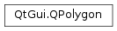

QPolygon¶
Synopsis¶
Functions¶
- def
__add__(l) - def
__eq__(v) - def
__iadd__(t) - def
__iadd__(t) - def
__lshift__(l) - def
__lshift__(t) - def
__lshift__(t) - def
__mul__(, m) - def
__mul__(, m) - def
__ne__(v) - def
__reduce__() - def
append(l) - def
append(t) - def
append(t) - def
at(i) - def
boundingRect() - def
capacity() - def
clear() - def
constData() - def
constFirst() - def
constLast() - def
contains(t) - def
containsPoint(pt, fillRule) - def
count() - def
count(t) - def
data() - def
empty() - def
endsWith(t) - def
fill(t[, size=-1]) - def
first() - def
front() - def
indexOf(t[, from=0]) - def
insert(i, n, t) - def
insert(i, t) - def
insert(i, t) - def
intersected(r) - def
intersects(r) - def
isEmpty() - def
isSharedWith(other) - def
last() - def
lastIndexOf(t[, from=-1]) - def
length() - def
mid(pos[, len=-1]) - def
move(from, to) - def
operator[](i) - def
pop_back() - def
pop_front() - def
prepend(t) - def
prepend(t) - def
push_back(t) - def
push_back(t) - def
push_front(t) - def
push_front(t) - def
remove(i) - def
remove(i, n) - def
removeAll(t) - def
removeAt(i) - def
removeFirst() - def
removeLast() - def
removeOne(t) - def
replace(i, t) - def
reserve(size) - def
resize(size) - def
setSharable(sharable) - def
shrink_to_fit() - def
size() - def
squeeze() - def
startsWith(t) - def
subtracted(r) - def
swap(other) - def
takeAt(i) - def
takeFirst() - def
takeLast() - def
toList() - def
translate(dx, dy) - def
translate(offset) - def
translated(dx, dy) - def
translated(offset) - def
united(r) - def
value(i) - def
value(i, defaultValue)
Detailed Description¶
The
PySide2.QtGui.QPolygonclass provides a vector of points using integer precision.A
PySide2.QtGui.QPolygonobject is aQVector<PySide2.QtCore.QPoint>. The easiest way to add points to aPySide2.QtGui.QPolygonis to useQVector‘s streaming operator, as illustrated below:polygon = QPolygon() polygon << QPoint(10, 20) << QPoint(20, 30)In addition to the functions provided by
QVector,PySide2.QtGui.QPolygonprovides some point-specific functions.Each point in a polygon can be retrieved by passing its index to the
point()function. To populate the polygon,PySide2.QtGui.QPolygonprovides thesetPoint()function to set the point at a given index, thesetPoints()function to set all the points in the polygon (resizing it to the given number of points), and theputPoints()function which copies a number of given points into the polygon from a specified index (resizing the polygon if necessary).
PySide2.QtGui.QPolygonprovides thePySide2.QtGui.QPolygon.boundingRect()andPySide2.QtGui.QPolygon.translate()functions for geometry functions. Use theQMatrix.map()function for more general transformations of QPolygons.The
PySide2.QtGui.QPolygonclass is implicitly shared .See also
-
class
PySide2.QtGui.QPolygon¶ -
class
PySide2.QtGui.QPolygon(v) -
class
PySide2.QtGui.QPolygon(other) -
class
PySide2.QtGui.QPolygon(r[, closed=false]) -
class
PySide2.QtGui.QPolygon(v) -
class
PySide2.QtGui.QPolygon(size) Parameters: - r –
PySide2.QtCore.QRect - size –
PySide2.QtCore.int - closed –
PySide2.QtCore.bool - other –
PySide2.QtGui.QPolygon - v –
QVector
Constructs a polygon with no points.
See also
QVector.isEmpty()Constructs a copy of the given
polygon.See also
setPoints()Constructs a polygon from the given
rectangle. Ifclosedis false, the polygon just contains the four points of the rectangle ordered clockwise, otherwise the polygon’s fifth point is set torectangle. topLeft() .Note that the bottom-right corner of the rectangle is located at (rectangle.x() + rectangle. width() , rectangle.y() + rectangle. height() ).
See also
setPoints()Constructs a polygon containing the specified
points.See also
setPoints()Constructs a polygon of the given
size. Creates an empty polygon ifsize== 0.See also
QVector.isEmpty()- r –
-
PySide2.QtGui.QPolygon.__reduce__()¶ Return type: PyObject
-
PySide2.QtGui.QPolygon.append(l)¶ Parameters: l –
-
PySide2.QtGui.QPolygon.append(t) Parameters: t – PySide2.QtCore.QPoint
-
PySide2.QtGui.QPolygon.append(t) Parameters: t – PySide2.QtCore.QPoint
-
PySide2.QtGui.QPolygon.at(i)¶ Parameters: i – PySide2.QtCore.intReturn type: PySide2.QtCore.QPoint
-
PySide2.QtGui.QPolygon.boundingRect()¶ Return type: PySide2.QtCore.QRectReturns the bounding rectangle of the polygon, or
PySide2.QtCore.QRect(0, 0, 0, 0) if the polygon is empty.See also
QVector.isEmpty()
-
PySide2.QtGui.QPolygon.capacity()¶ Return type: PySide2.QtCore.int
-
PySide2.QtGui.QPolygon.clear()¶
-
PySide2.QtGui.QPolygon.constData()¶ Return type: PySide2.QtCore.QPoint
-
PySide2.QtGui.QPolygon.constFirst()¶ Return type: PySide2.QtCore.QPoint
-
PySide2.QtGui.QPolygon.constLast()¶ Return type: PySide2.QtCore.QPoint
-
PySide2.QtGui.QPolygon.contains(t)¶ Parameters: t – PySide2.QtCore.QPointReturn type: PySide2.QtCore.bool
-
PySide2.QtGui.QPolygon.containsPoint(pt, fillRule)¶ Parameters: - pt –
PySide2.QtCore.QPoint - fillRule –
PySide2.QtCore.Qt.FillRule
Return type: PySide2.QtCore.boolReturns
trueif the givenpointis inside the polygon according to the specifiedfillRule; otherwise returnsfalse.- pt –
-
PySide2.QtGui.QPolygon.count(t)¶ Parameters: t – PySide2.QtCore.QPointReturn type: PySide2.QtCore.int
-
PySide2.QtGui.QPolygon.count() Return type: PySide2.QtCore.int
-
PySide2.QtGui.QPolygon.data()¶ Return type: PySide2.QtCore.QPoint
-
PySide2.QtGui.QPolygon.empty()¶ Return type: PySide2.QtCore.bool
-
PySide2.QtGui.QPolygon.endsWith(t)¶ Parameters: t – PySide2.QtCore.QPointReturn type: PySide2.QtCore.bool
-
PySide2.QtGui.QPolygon.fill(t[, size=-1])¶ Parameters: - t –
PySide2.QtCore.QPoint - size –
PySide2.QtCore.int
Return type: - t –
-
PySide2.QtGui.QPolygon.first()¶ Return type: PySide2.QtCore.QPoint
-
static
PySide2.QtGui.QPolygon.fromList(list)¶ Parameters: list – Return type:
-
PySide2.QtGui.QPolygon.front()¶ Return type: PySide2.QtCore.QPoint
-
PySide2.QtGui.QPolygon.indexOf(t[, from=0])¶ Parameters: - t –
PySide2.QtCore.QPoint - from –
PySide2.QtCore.int
Return type: PySide2.QtCore.int- t –
-
PySide2.QtGui.QPolygon.insert(i, t)¶ Parameters: - i –
PySide2.QtCore.int - t –
PySide2.QtCore.QPoint
- i –
-
PySide2.QtGui.QPolygon.insert(i, t) Parameters: - i –
PySide2.QtCore.int - t –
PySide2.QtCore.QPoint
- i –
-
PySide2.QtGui.QPolygon.insert(i, n, t) Parameters: - i –
PySide2.QtCore.int - n –
PySide2.QtCore.int - t –
PySide2.QtCore.QPoint
- i –
-
PySide2.QtGui.QPolygon.intersected(r)¶ Parameters: r – PySide2.QtGui.QPolygonReturn type: PySide2.QtGui.QPolygonReturns a polygon which is the intersection of this polygon and
r.Set operations on polygons will treat the polygons as areas. Non-closed polygons will be treated as implicitly closed.
See also
-
PySide2.QtGui.QPolygon.intersects(r)¶ Parameters: r – PySide2.QtGui.QPolygonReturn type: PySide2.QtCore.boolReturns
trueif the current polygon intersects at any point the given polygonp. Also returnstrueif the current polygon contains or is contained by any part ofp.Set operations on polygons will treat the polygons as areas. Non-closed polygons will be treated as implicitly closed.
See also
-
PySide2.QtGui.QPolygon.isEmpty()¶ Return type: PySide2.QtCore.bool
Parameters: other – Return type: PySide2.QtCore.bool
-
PySide2.QtGui.QPolygon.last()¶ Return type: PySide2.QtCore.QPoint
-
PySide2.QtGui.QPolygon.lastIndexOf(t[, from=-1])¶ Parameters: - t –
PySide2.QtCore.QPoint - from –
PySide2.QtCore.int
Return type: PySide2.QtCore.int- t –
-
PySide2.QtGui.QPolygon.length()¶ Return type: PySide2.QtCore.int
-
PySide2.QtGui.QPolygon.mid(pos[, len=-1])¶ Parameters: - pos –
PySide2.QtCore.int - len –
PySide2.QtCore.int
Return type: - pos –
-
PySide2.QtGui.QPolygon.move(from, to)¶ Parameters: - from –
PySide2.QtCore.int - to –
PySide2.QtCore.int
- from –
-
PySide2.QtGui.QPolygon.__ne__(v)¶ Parameters: v – Return type: PySide2.QtCore.bool
-
PySide2.QtGui.QPolygon.__mul__(m)¶ Parameters: m – PySide2.QtGui.QTransformReturn type: PySide2.QtGui.QPolygon
-
PySide2.QtGui.QPolygon.__mul__(m) Parameters: m – PySide2.QtGui.QMatrixReturn type: PySide2.QtGui.QPolygon
-
PySide2.QtGui.QPolygon.__add__(l)¶ Parameters: l – Return type:
-
PySide2.QtGui.QPolygon.__iadd__(t)¶ Parameters: t – PySide2.QtCore.QPointReturn type:
-
PySide2.QtGui.QPolygon.__iadd__(t) Parameters: t – PySide2.QtCore.QPointReturn type:
-
PySide2.QtGui.QPolygon.__lshift__(t)¶ Parameters: t – PySide2.QtCore.QPointReturn type:
-
PySide2.QtGui.QPolygon.__lshift__(l) Parameters: l – Return type:
-
PySide2.QtGui.QPolygon.__lshift__(t) Parameters: t – PySide2.QtCore.QPointReturn type:
-
PySide2.QtGui.QPolygon.__eq__(v)¶ Parameters: v – Return type: PySide2.QtCore.bool
-
PySide2.QtGui.QPolygon.operator[](i) Parameters: i – PySide2.QtCore.intReturn type: PySide2.QtCore.QPoint
-
PySide2.QtGui.QPolygon.pop_back()¶
-
PySide2.QtGui.QPolygon.pop_front()¶
-
PySide2.QtGui.QPolygon.prepend(t)¶ Parameters: t – PySide2.QtCore.QPoint
-
PySide2.QtGui.QPolygon.prepend(t) Parameters: t – PySide2.QtCore.QPoint
-
PySide2.QtGui.QPolygon.push_back(t)¶ Parameters: t – PySide2.QtCore.QPoint
-
PySide2.QtGui.QPolygon.push_back(t) Parameters: t – PySide2.QtCore.QPoint
-
PySide2.QtGui.QPolygon.push_front(t)¶ Parameters: t – PySide2.QtCore.QPoint
-
PySide2.QtGui.QPolygon.push_front(t) Parameters: t – PySide2.QtCore.QPoint
-
PySide2.QtGui.QPolygon.remove(i, n)¶ Parameters: - i –
PySide2.QtCore.int - n –
PySide2.QtCore.int
- i –
-
PySide2.QtGui.QPolygon.remove(i) Parameters: i – PySide2.QtCore.int
-
PySide2.QtGui.QPolygon.removeAll(t)¶ Parameters: t – PySide2.QtCore.QPointReturn type: PySide2.QtCore.int
-
PySide2.QtGui.QPolygon.removeAt(i)¶ Parameters: i – PySide2.QtCore.int
-
PySide2.QtGui.QPolygon.removeFirst()¶
-
PySide2.QtGui.QPolygon.removeLast()¶
-
PySide2.QtGui.QPolygon.removeOne(t)¶ Parameters: t – PySide2.QtCore.QPointReturn type: PySide2.QtCore.bool
-
PySide2.QtGui.QPolygon.replace(i, t)¶ Parameters: - i –
PySide2.QtCore.int - t –
PySide2.QtCore.QPoint
- i –
-
PySide2.QtGui.QPolygon.reserve(size)¶ Parameters: size – PySide2.QtCore.int
-
PySide2.QtGui.QPolygon.resize(size)¶ Parameters: size – PySide2.QtCore.int
-
PySide2.QtGui.QPolygon.setSharable(sharable)¶ Parameters: sharable – PySide2.QtCore.bool
-
PySide2.QtGui.QPolygon.shrink_to_fit()¶
-
PySide2.QtGui.QPolygon.size()¶ Return type: PySide2.QtCore.int
-
PySide2.QtGui.QPolygon.squeeze()¶
-
PySide2.QtGui.QPolygon.startsWith(t)¶ Parameters: t – PySide2.QtCore.QPointReturn type: PySide2.QtCore.bool
-
PySide2.QtGui.QPolygon.subtracted(r)¶ Parameters: r – PySide2.QtGui.QPolygonReturn type: PySide2.QtGui.QPolygonReturns a polygon which is
rsubtracted from this polygon.Set operations on polygons will treat the polygons as areas. Non-closed polygons will be treated as implicitly closed.
-
PySide2.QtGui.QPolygon.swap(other)¶ Parameters: other – PySide2.QtGui.QPolygonSwaps polygon
otherwith this polygon. This operation is very fast and never fails.
-
PySide2.QtGui.QPolygon.takeAt(i)¶ Parameters: i – PySide2.QtCore.intReturn type: PySide2.QtCore.QPoint
-
PySide2.QtGui.QPolygon.takeFirst()¶ Return type: PySide2.QtCore.QPoint
-
PySide2.QtGui.QPolygon.takeLast()¶ Return type: PySide2.QtCore.QPoint
-
PySide2.QtGui.QPolygon.toList()¶ Return type:
-
PySide2.QtGui.QPolygon.translate(dx, dy)¶ Parameters: - dx –
PySide2.QtCore.int - dy –
PySide2.QtCore.int
Translates all points in the polygon by (
dx,dy).See also
- dx –
-
PySide2.QtGui.QPolygon.translate(offset) Parameters: offset – PySide2.QtCore.QPointThis is an overloaded function.
Translates all points in the polygon by the given
offset.See also
-
PySide2.QtGui.QPolygon.translated(offset)¶ Parameters: offset – PySide2.QtCore.QPointReturn type: PySide2.QtGui.QPolygonThis is an overloaded function.
Returns a copy of the polygon that is translated by the given
offset.See also
-
PySide2.QtGui.QPolygon.translated(dx, dy) Parameters: - dx –
PySide2.QtCore.int - dy –
PySide2.QtCore.int
Return type: Returns a copy of the polygon that is translated by (
dx,dy).See also
- dx –
-
PySide2.QtGui.QPolygon.united(r)¶ Parameters: r – PySide2.QtGui.QPolygonReturn type: PySide2.QtGui.QPolygonReturns a polygon which is the union of this polygon and
r.Set operations on polygons, will treat the polygons as areas, and implicitly close the polygon.
-
PySide2.QtGui.QPolygon.value(i)¶ Parameters: i – PySide2.QtCore.intReturn type: PySide2.QtCore.QPoint
-
PySide2.QtGui.QPolygon.value(i, defaultValue) Parameters: - i –
PySide2.QtCore.int - defaultValue –
PySide2.QtCore.QPoint
Return type: - i –
© 2018 The Qt Company Ltd. Documentation contributions included herein are the copyrights of their respective owners. The documentation provided herein is licensed under the terms of the GNU Free Documentation License version 1.3 as published by the Free Software Foundation. Qt and respective logos are trademarks of The Qt Company Ltd. in Finland and/or other countries worldwide. All other trademarks are property of their respective owners.